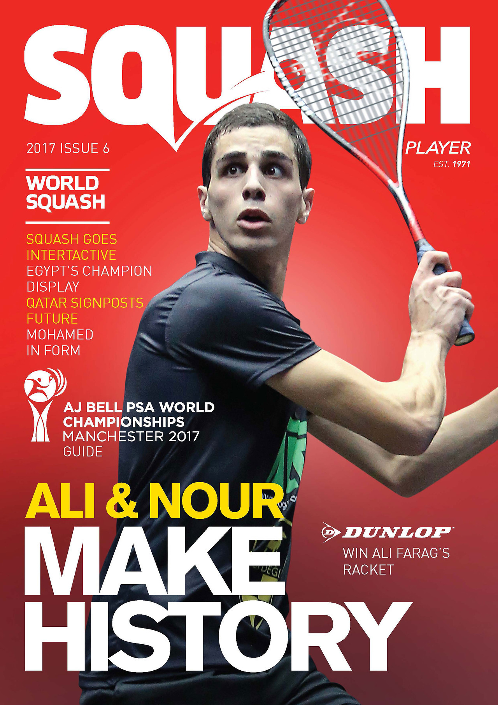
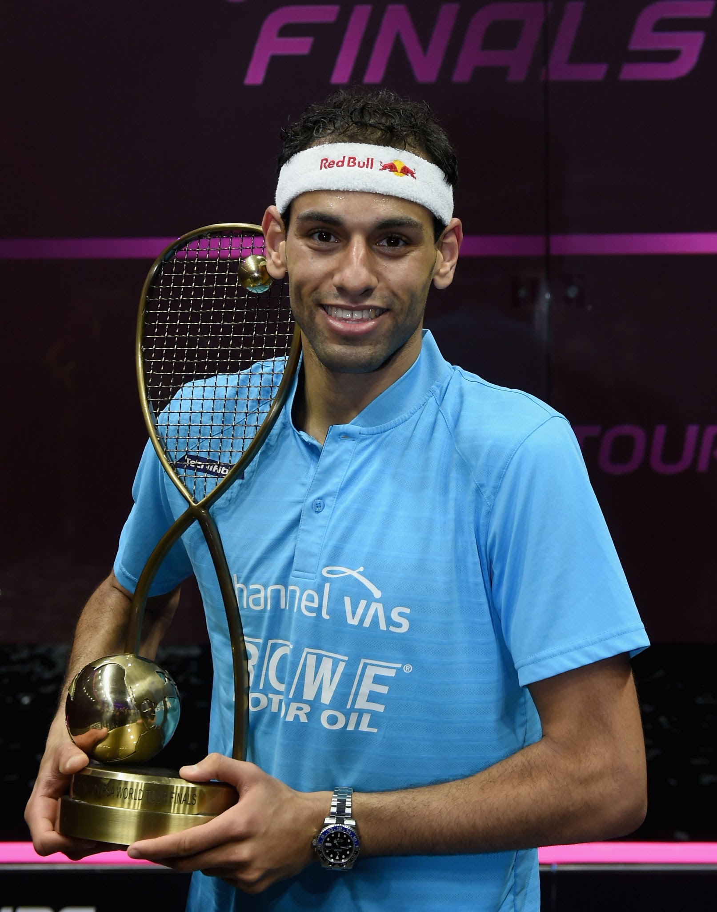
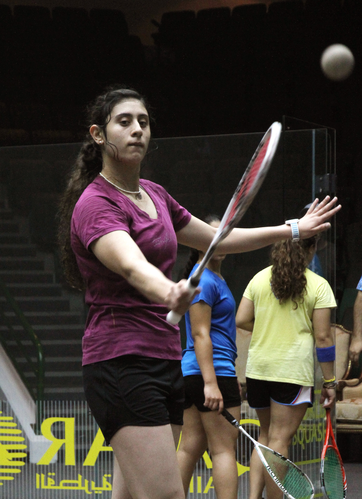
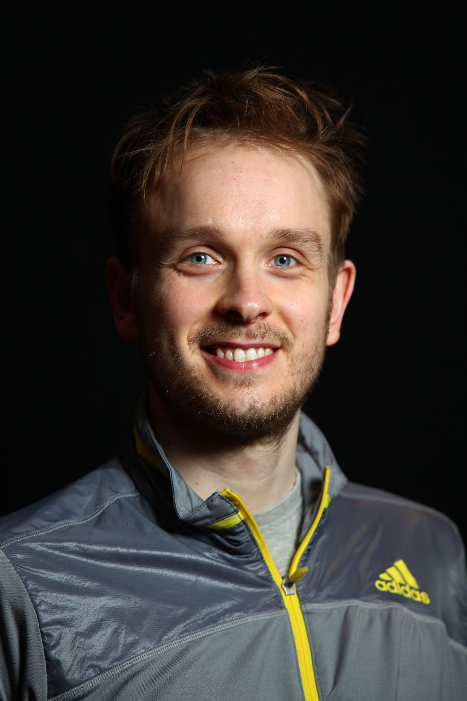
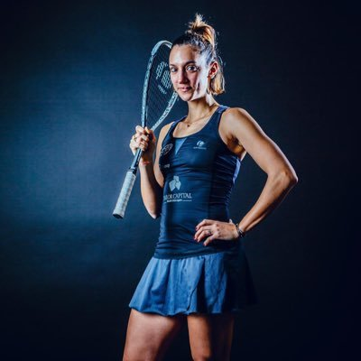

Find current visitor information reg. Covid-19 here.
Magazine of the month
It's our monthly Magazine, it covers everything related to squash game(like tournaments, latest rackets etc) and featuring player of the month:
Here are the latest update regarding squash matches held last month:
CHALLENGER TOUR WEEKLY PREVIEW: read
 The Challenger Tour holds three events on three continents over the coming week, with tournaments taking place in Canada, India and Russia.
All three tournaments are being run with domestic entry restrictions due to the ongoing COVID-19 pandemic.
Squash Quebec Open,
The first tournament of the week begins on Sunday 29 August at Club Atwater in Montreal, with the Squash Quebec Open taking place across the next five days.
The Challenger 5 level men’s event is for only those based in Canada, with World No.82 Shawn DeLierre the top seed. Michael McCue and David Baillargeon, both members of the world’s top 100, will also be in action.
Moscow Squash Tour III,
For the third time in a short period, the Challenger Tour goes back to Russia, with the Moscow Squash Tour III being held at Squash Club Moscow from Saturday 4 to Sunday 5 September.
The Challenger 3 level event is for those currently living in Russia, with World No.161 Vladislav Titov and Ukrainian No.1 Valeriy Fedoruk seeded to meet in the final once again.
SCHRAGLAGE SQUASH OPEN: read
The Schraglage Squash Open begins in Stuttgart, Germany tomorrow, with both a men’s and women’s draw taking place at Pink Power over the next three days.
The Challenger 5 and 3 level events are being run with regional restrictions due to the ongoing COVID-19 pandemic, allowing entrants from across Europe to participate in the tournament.
England’s World No.90 Robert Downer will be the top seed for the men’s draw, with Czech Republic’s Martin Svec and the German duo of Yannik Omlor and Valentin Rapp.
12 nationalities will be represented in total across both the men’s and women’s, with the likes of Dutch No.1 Roshan Bharos, Belgium’s Joeri Hapers and the Swiss duo of Yannick Wilhelmi and Robin Gadola.
The women’s draw features the German trio of Saskia Beinhard, Katerina Tycova and Aylin Gunsav, who will all be amongst the seeds on home soil.
Frenchwoman Taba Taghavi, Austria’s Jacqueline Peychar and the Swiss trio of Stella Kaufmann, Ambre Allinckx and Nadia Pfister will be the rest of the seeds.
We spoke to Pfister who will be the top seed for the women’s event, earlier this week, ahead of the Schraglage Squash Open.
SQUASH QUEBEC OPEN: read
The Squash Quebec Open begins later today at Club Atwater in Montreal, with the Challenger 5 tournament taking place over the next five days.
Due to the ongoing COVID-19 pandemic, the tournament is being run with domestic entry restrictions, allowing only those currently based in Canada to participate.
Two non-Canadians will be in action this week in Quebec, with Pakistan’s Rafi Khan and Bermudan Taylor Carrick both featuring in the tournament.
Apart from that, the rest of the 24-strong field hail from Canada, with three members of the top 100 in action. Michael McCue and David Baillargeon will both be in action, along with World No.82, and the tournament’s top seed, Shawn DeLierre.
The Canadian No.1 will be featuring on the PSA Tour for the first time since prior to the start of the COVID-19 pandemic, with his last tournament being the Assante Wealth Management Carter Classic back in Februrary 2020. DeLierre admits that he has used to break to his advantage.
SCHRAGLAGE SQUASH OPEN: read
England’s Robert Downer and Spain’s Marta Dominguez Fernandez have claimed the titles at the Schraglage Squash Open, with the pair both winning lengthy finals at the Pink Power Club in Stuttgart on Sunday afternoon.
Due to the ongoing COVID-19 pandemic, the Challenger 5 and 3 level events were run with regional entry restrictions, allowing those currently living in Europe to participate in the tournament.
Fernandez was featuring in only her second Tour event, having made her debut at the Squash Eredivisie – Speelronde 6 event in Amsterdam earlier this month, where she made the final.
She went on to do one better this time round, defeating four of the top six seeds en route to her maiden victory on the Tour. The Spaniard started her campaign against No.3 seed Saskia Beinhard before then beating No.6 seed Aylin Gunsav to make it into the last four.
In the semi-finals, the 20-year-old downed the tournament’s top seed Nadia Pfister in a four-game battle, before winning the final against No.2 seed Ambre Allinckx with the same scoreline, 3-1.
The men’s event was won by Englishman Robert Downer, who claimed his second victory of 2021, after winning at the Czech Pro Series 2 earlier this season.
The World No.90 began his week with a win over Rene Mijs in the first round, before then Toufik Mekhalfi and Joeri Hapers to move into the semi-finals.